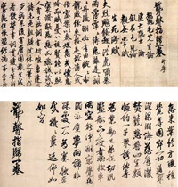

親を安心させ、社会で役に立ち、自分の道を選ぶ。この三つがうまく重ならないとき、どうすればよいのだろう。『三教指帰（さんごうしいき）』は、儒教・道教・仏教を代表する人物の議論によって、その難しさを考える書物である。若い空海の出家への意志と結びつけて読まれてきたが、内容は「仏教に決めました」という報告よりずっと込み入っている。
儒者は、学びと礼を身につけ、社会で働く道を説く。道士は、それでも人は病み、老い、死ぬではないかと問い返す。仏教を説く乞児は、長寿や仙術でさえ永遠の安心を保証しない、と議論を進める。では、何もかも無駄なのか。乞児が最後に示すのは、苦しみの仕組みを見きわめ、自分と他者を助ける実践の道である。
人物たちがどの問題に答え、次の人物が何を問い直すのかを、順番にたどろう。この本の儒者や道士は、空海が論争を描くために作った登場人物である。儒教や道教の一面を示しているが、それぞれの教えのすべてを代表しているわけではない。
ページ後半の場面別解説では、保存した回答から、その場面に関わる原句・解釈・中学生向けの会話例を読み足せる。会話例は現代の説明用の言い換えであり、登場人物の原発言そのものと区別して読む。
まず、五人の登場人物を見分ける
| 人物 | 読み | 物語での役割 |
|---|---|---|
| 兎角公 | とかくこう | 議論の場となる家の主人。甥を教育したいと思う |
| 蛭牙公子 | しつがこうし | 兎角公の甥。放埒な生活を戒められる青年 |
| 亀毛先生 | きもうせんせい | 儒教を説き、青年に学びと社会での働きを勧める |
| 虚亡隠士 | きょぶいんじ | 道教を説き、長生きと神仙の道を勧める |
| 仮名乞児 | かめいこつじ | 仏教を説く、貧しい修行者。三つの教えを論じて結論を導く |
蛭牙公子は、兎角公の息子ではなく甥である。名前は個性の強い架空の人物名で、史実の誰に当てはめるかには研究上の議論がある。まずは、作品内での役割を押さえるほうが論証を追いやすい。浄土真宗本願寺派総合研究所・登場人物と読み
もう一人、仮名乞児の回想に、名前を明かさない「或」、つまり「ある人」が登場する。この人が乞児に「親や君主を支えるべきではないか」と問いかける。この忠孝の問答は、兎角公の家で行われる三教の会談より前の場面である。亀毛先生が会談中に同じ問いを発した、と読み替えると、物語の順序が崩れてしまう。大柴清圓「弘法大師の生誕地に関する一考察」第5節
儒者の答え — 欲望のままでは、力を持っても人生が崩れる
兎角公の困りごとは、甥の蛭牙公子が酒や遊びにふけり、身を持ち崩していることである。そこで、亀毛先生に教育を頼む。先生はまず、何を楽しみにして生きるかによって人の行き先は変わる、と説く。目先の快楽だけを追えば、才能や財産があってもそれを生かせない。
先生の処方は、学び、礼、忠孝によってふるまいを整えることである。親や年長者との関係を粗末にせず、学んだことを社会の中で役立てる。乱暴で身勝手な振る舞いを改めれば、信頼を得て、仕事や暮らしにも道が開ける。先生は立身や収入、家の繁栄にも話を進めるため、青年が「何を得られるか」を想像しやすい説得になっている。
原文 學也祿在其中。
読み下し 学ぶときは、禄その中に在り。
読み まなぶときは、ろくそのなかにあり。
意訳 学びを身につけることには、生活を支える禄を得る道も含まれている。
『三教指帰』亀毛先生論。原文・岩波1948年版、127頁
「禄」は、国の役人に与えられる収入である。古代の国家では、経典や文章を学ぶことが、役人として働く力にもつながった。ただし、この句は『論語』の一部を引用している。もとの章には「君子は道を謀り、食を謀らず」、つまり立派な人は生きる道を求め、食べるための利益だけを求めない、という趣旨もある。儒教には、出世や収入だけに収まらない学びの意味がある。そのうえで亀毛先生は、蛭牙公子を改心させるために、学びによって人として成長することと、暮らしに利益があることを結びつけて説いている。
蛭牙公子は教えを受け入れる。兎角公も喜ぶ。この時点で、当初の教育問題には一つの答えが出たように見える。ところが、その場で話を聞いていた虚亡隠士が、先生自身に問いを向ける。
道士の反駁 — 正しく出世しても、老いと死からは逃げられない
虚亡隠士は、儒者の教えを「他人を治す薬」にたとえる。しかし、薬を与える先生自身が、老いや病や死という深い問題を解決できていないではないか、と批判する。
原文 如何不療己身之膏肓。輒爾發露他人之腫脚。
読み下し いかんが己身の膏肓を療せずして、たやすく他人の腫脚を発露すや。
読み いかんがきしんのこうこうをりょうせずして、たやすくたにんのしゅきゃくをはつろすや。
意訳 自分の深い病を治していないのに、どうして軽々しく他人の足の腫れを指摘するのか。
『三教指帰』虚亡隠士論。原文・同版129頁
膏肓は、治しにくい深い病を言うときに使われる語である。この場面では、先生の外見を笑うだけでなく、教える人の生き方も、その教えで救われるのかを問い返している。社会的な成功は、本当に最後まで頼れるのか。道士は儒者の答えの範囲を広げようとする。
道士の提案は、神仙の術を学び、命を長らえ、世俗のしがらみを超えることである。仙薬、呼吸の調整、神通のような力が語られ、天地の間を自在に行き来する姿が壮大に描かれる。地位を得て人に仕える人生より、自分の生命と自由を保つ人生のほうがよい、という説得である。原文・同版129〜131頁
虚亡隠士は、欲望や過度な感情が身を損なうとして、それを抑えるよう求める。本文には、食事や性欲などを制する修練も並ぶ。ここで説かれる道教は、好きなことをして遊ぶ教えではなく、自分を律して生命を保とうとする道である。仙薬や不死の話は、古典に描かれた神仙思想として読もう。
亀毛先生たちは、隠士の説明にも感服する。儒者の教育は青年の生活を変えたが、道士は、その先にある生命の問題を解けると約束する。ここへ、やせた身に粗末な衣をまとった仮名乞児が加わる。けれども本文は、その前に乞児がどんな迷いを抱えていたかを語っている。
仏教を説く人も、家族への責任に悩んでいる
乞児は、人里から離れた修行者として描かれる。ある人はその姿を見て、世間から隠れていることを批判する。人間として最も大切なのは忠と孝ではないか。親も君主もいるのに、働いて仕えず、家から離れて修行するだけでは、親の悲しみを増やし、先祖の名を傷つけるのではないか、という問いである。
乞児は「忠孝とは何か」と問い返す。相手は、家では親の様子を気遣い、世話をし、社会では君主を支え、必要なときには諫めることだ、と具体的に答える。ここで「忠」は、言われるままに従うだけの意味ではない。君主の誤りをただすことも含まれている。
それに対し、乞児は親の恩を否定しない。育ててもらった恩は深く、忘れられないと述べる。老いた親に報いたいのに、役に立つ収入も得られず、家の困窮も気にかかる。働こうにも自信がなく、退こうにも親への責任がある。出家への道を、痛みのない自由な選択として描いてはいない。
原文 反哺無由。
読み下し 哺を反するに由なし。
読み ほをはんするによしなし。
意訳 育ててもらった恩を、養い返す形で返す道がない。
『三教指帰』仮名乞児論。原文・同版133頁
「反哺」は、育てられた子が親を養い返すことを表す比喩である。乞児は、この葛藤を詩にしたあと、「ある人」に宛てる書を作る。その答えの中心が「小孝」と「大孝」の違いである。
原文 小孝用力大孝不匱。
読み下し 小孝は力を用い、大孝は匱しからず。
読み しょうこうはちからをもちい、だいこうはとぼしからず。
意訳 小さな孝は自分の力で親を支える。大きな孝は、尽きることのない広がりをもつ。
『三教指帰』仮名乞児論。原文・同版134頁
この区別は、儒教の『礼記』にも見える。乞児は儒教の言葉を捨てず、それを使って出家を弁護する。親のそばで世話をするだけが孝のすべてなのか。親を含む人々の苦しみを、もっと長い時間と広い範囲で救う道も孝と呼べるのではないか、と考えるのである。
乞児は、髪を剃って故郷を離れた人物と、虎を救うために身を捨てた菩薩の説話を並べる。どちらも、父母や親族を深く悲しませた。相手の基準だけなら不孝になるはずなのに、伝統では徳の高い人物、覚りに向かう尊い存在として称賛される。ならば、親を悲しませたという一面だけで、行いの善悪を決められるのか。この問いによって、孝を測る物差しを広げようとする。身を捨てる説話は、極限の布施を表す物語として用いられている。
さらに乞児は、国家のために祈り、親や人々へ修行の利益を向けることで、忠孝を果たすと説明する。これは「親を捨てる」という答えではなく、恩への報い方を、扶養から救済へ広げる議論である。原文・同版133〜134頁、大柴清圓2023年論文・忠孝問答の検討
現代の生活に引き寄せるなら、「家族の期待どおりでない道を選んでも、恩に報いる方法は考えられる」という問いになる。ただし、「大きな理想がある」と言えば身近な責任が消える、という免罪符にしてしまうと、親への深い苦悩を語った前半が抜け落ちる。
「母へのプレゼン」と呼ぶなら、どこまで言えるか
周囲を説得するプレゼンとして読むと、この本の切実さに近づける。「自分は仏道へ進みたい。それは親や社会を捨てることなのか」という問題を、論争の形で説明しているからである。
ただし、母親だけに出家や入信の許可を求めた文書、とまでは確認できない。『三教指帰』の序に反対者として出るのは「一多親識」で、親族と知人を指すとする伝統的な読みと、数人の親しい知人とする読みがある。母の名や、母に宛てる形式はない。実際にこの書を読んでもらう場があり、許可が下りたとも書かれていない。物語の「ある人」も、母と特定されていない。大柴清圓2023年論文・第5.3〜5.4節
「自分はなぜこの道を選ぶのか、親にも説明できるように考える本」として読むことはできる。ただし、歴史上の説得の場をそのまま記録した本とまではいえない。官人として働く道と、仏道へ進む道の選択を論じたと読む研究もあれば、桓武天皇の誤りをただすために書いたと読む研究もある。何のために、誰へ向けて書いたかについては、今も研究が続いている。藤井淳『空海『三教指帰』―桓武天皇への必死の諫言』出版社紹介
仏教の反駁 — 長寿でも、永遠の家を得たことにはならない
回想の問答を終えた乞児は、飢えを覚えて兎角公の家へ入る。そこで儒者と道士の話を聞き、両者の主張を批判する。儒教も道教も、ある部分は扱えている。しかし、自分たちが説明できる範囲を、人の苦しみ全体だと思ってはいないか、と問題を立て直すのである。本文には、象に触れるたとえもある。一部分を触って分かったつもりになることと、全体を知ることは違う。乞児は、相手の知識の量だけでなく、その見方の範囲を問う。
虚亡隠士は、乞児がどこの生まれかを尋ねる。乞児は、輪廻という視野から、迷いの世界には定まった家がないと答える。今の親や子だけでなく、他の生き物とも、生まれ変わりを通じて縁があると語る。これは、今の家族への恩を小さくする話ではなく、家族へ向ける気遣いを、家族以外にも広げる話につながる。
原文 無常暴風不論神仙。
読み下し 無常の暴風は、神仙を論ぜず。
読み むじょうのぼうふうは、しんせんをろんぜず。
意訳 移り変わりと死をもたらす暴風は、仙人だからといって手加減しない。
『三教指帰』仮名乞児論・無常の賦。原文・同版137頁
乞児の「無常の賦」は、権力、財産、美しさ、夫婦や親子の結びつき、仙人の術まで、次々に失われうるものとして描く。賦は、事物を詳しく描き出しながら説く文章の形式である。大切な人を失う悲しみも、地位を失う恐れも、寿命を長くすることだけでは消えない。道士の約束した安心にも、限界があると指摘する。
この場面の問いは「長生きは悪い」ではない。終わりの時期を先に延ばすことと、終わりへの恐れに振り回されないことは同じなのか、ということである。儒者が社会の秩序を整え、道士が命の持続を求めるのに対し、乞児は、変化を受け止められない迷いそのものに向き合おうとする。
仏教の処方 — 怖がらせたあとに、何をするよう勧めるのか
無常を説かれた亀毛先生たちは、嘆き、さらに教えを求める。乞児は続いて「生死海の賦」を語る。ここでは、生まれて死ぬことを繰り返す迷いの世界が、大きな海として描かれる。その海を荒らすものには、貪り、怒り、ものごとを見誤る無知などがある。
したがって、問題は死の瞬間だけにあるのではない。何かが欲しい、失うのが怖い、思いどおりにしたいという心が、日々の苦しみを作る。乞児は、海の広さを描くだけでなく、それを渡るための道具を示す。本文では、六度の筏、八正の舟、七覚の馬、四念の輪という比喩が連なる。原文・同版138〜139頁
六度とは、布施・持戒・忍辱・精進・禅定・智慧という六つの実践である。分け与えること、行いを慎むこと、困難や怒りに耐えること、努力を続けること、心を静めること、ものごとを正しく見きわめること。難しい名前を覚えるだけでなく、欲望や怒りが心を占領したときに何をするか、という行動の道でもある。
八正は、見方、考え、言葉、行い、生活、努力、気づき、心の集中を整える八つの道である。七覚と四念も、気づきや心の働きを育てる修行のまとまりを指す。本文は一つ一つの修行の手順を教える本ではないが、苦しみを越えるには何を実践するかを示している。教えを聞き、ものの見方を変え、実際の行いを変える。その積み重ねによって進む道が、乞児の答えなのである。
ここで儒者・道士との違いがはっきりする。社会で成功する力や、身体の命を伸ばす術を否定するだけでなく、何に執着しているために苦しいのかを見抜き、その執着を弱める実践を続けるのである。さらに、その道は自分だけの安全確保で終わらず、他の生き物の救済へ進む。
結論 — 三つを公平に並べて終わる本ではない
最後に、亀毛先生たちは乞児の教えに感服し、自分たちの迷いを認める。帰依の決意は、身を材料にして教えを書き記すほどの強い比喩で表現される。これは、作品が結論を際立たせるための誇張である。
『三教指帰』の序と結びの詩は、儒教・道教にも役割があると語る。人の性質や望みはさまざまであり、医者が病に応じて薬や鍼を変えるように、教えにも違いがある。三つとも聖人の教えとしながら、救いの深さには「浅深の隔て」があるとするのである。本文では三つの教えが激しく争うが、序と結びでは、それぞれが人を導く役割を認めている。両方を読めば、複数の教えの働きを認めながら、仏教を最も深い救済の道に位置づける構成だと分かる。
原文 自他兼利濟誰忘獸與禽
読み下し 自他兼ねて利済す。誰か獣と禽とを忘れん。
読み じたかねてりさいす。だれかじゅうときんとをわすれん。
意訳 自分と他者をともに助ける。そのとき獣や鳥を忘れてよいだろうか。
『三教指帰』結びの十韻の詩。原文・同版140頁
「自他」は、自分と他者。「禽」は鳥をいう。最終的なよい人生は、自分の地位だけ、自分の長寿だけ、自分の安心だけでは測れない。救う相手に、動物まで入っていることも見逃せない。
最後の二句では、三界の束縛を知ったのなら、冠のひもやかんざしを捨てて出家しないのか、と問いかける。作品は、三教の情報を並べて選択を読者に丸投げするものではない。仏道へ進む選択を、強く勧める結論で閉じる。現代の読者は、その宗教的な結論を確かに読み取ったうえで、「自分が最も大切にする道は、どの問題に答えているか」と問い直すことができる。
『聾瞽指帰』と『三教指帰』は、題名だけが違うのか
延暦16年（797）、数え24歳の空海の著作として伝わるのが『聾瞽指帰（ろうこしいき）』である。金剛峯寺所蔵の国宝で、高野山霊宝館は弘法大師の筆と紹介している。そこから後に『三教指帰』へ改められた、とするのが広く用いられる説明である。高野山霊宝館・収蔵品紹介
「初稿と改稿」と覚えるのは入口として便利だが、題名だけの変更ではない。また、残された『聾瞽指帰』を、思いつきを走り書きした未完成のメモだと思うのも適切でない。三教の論争を備えた文学作品である。大きく異なるのは序文と結びの詩で、本文にも語句や文章の組み方の違いがある。
| 比べる場所 | 『聾瞽指帰』 | 『三教指帰』 |
|---|---|---|
| 序文 | 対句と典故を多く用い、文章を書く自負や憤りを語る | 学問から山林修行へ向かった回想と、忠孝に背くという批判への応答を、より直接に語る |
| 本文 | 儒・道・仏の人物による論争が骨格 | 骨格を共有しつつ、語句、引用、対句、音の配慮などに違いがある |
| 結びの十韻の詩 | 儒教・道教の限界と、仏道への志向を強く打ち出す | 人の性質に応じた三教の役割も示し、仏教の広い救済と出家へ結ぶ |
本文で『論語』を引用する箇所にも、「耕」「学」の後に「也」が加えられるなどの違いがある。小さな一字の変更でも、引用の形や漢文の調子が変わる。序と結びだけでなく、本文にも手が加えられているのである。大柴清圓「再論『三教指帰』真作説」
ただし、誰が、いつ文章を改めたかについては、研究者の見解が分かれている。空海自身が書き直したと見る研究のほか、後の時代の人が改めたとする説もあり、その根拠への反論もある。両書に797年という同じ年が記されていても、書き直しがその年に行われたとは決められない。ここでは、『三教指帰』は『聾瞽指帰』を後に改めた形として伝わっている、と押さえよう。改訂時期は断定できない。米田弘仁・研究史の整理、大柴清圓2016年論文
現物を見るとき、どこに注目するか

上は上巻の巻頭、下は下巻の巻末。二つの巻端を並べた写真である。本文を知った後に見ると、文章の流れと筆の流れを一緒に追える。
国宝『聾瞽指帰』・高野山霊宝館公式写真霊宝館の公式写真では、『聾瞽指帰』の上巻巻頭と下巻巻末を見比べられる。文章の内容だけでなく、行の流れ、文字の大きさや形、筆が続くところと止まるところを観察したい。論争の力は、説明の論理と、書かれた文字の姿の両方で伝わってくる。霊宝館公式写真と作品紹介
現物の『聾瞽指帰』と、ここで内容をたどった『三教指帰』には違いがあるため、写真の文字をそのまま改訂形の引用と一致させようとしないことも大切である。所蔵していることと、訪問日に原本を展示していることは別なので、公開の情報は訪問前に確認したい。
もう一段、本文の奥へ
気になった言葉を開く。原文の表現から意味をたどり、身近な場面へ戻して考える。
01三つの教えは、同じ高さに並ぶのかこの助言は、誰の、どの深さの問題に効くのだろう。
原本の表現
雖淺深有隔並皆聖説。
読み 浅深の隔て有りといえども、並びに皆聖説なり。（あさきふかきのへだてありといえども、ならびにみなしょうせつなり。）
空海『三教指帰』漢文原文 · 『三教指帰』序、加藤精神訳註・岩波書店1948年版の原文 p.123（PDF p.63）
文脈に沿って読む
深さに違いはあっても、三つとも聖人の教えである。
序文は、物の性質が一様でないことを、飛ぶものと水に沈むものの違いにたとえる。そこから教えも三つあると説明する。ただし浅深の違いがあるため、三教が同じ結論へ導くという意味ではない。結びの詩でも医者が人に応じて薬や鍼を変える比喩があり、儒・道の役割を認めながら仏教を深い道に置く。
中学生にもわかる説明
この本は、儒教・道教・仏教を、三種類の「薬」のように考えます。人には違う困り方があるため、一つの教えだけでは届かない人もいる、と説明します。三つとも役目をもつ教えとして認めています。
ただし、三つを同じ高さに並べるわけではありません。儒教は社会での生き方、道教は命や長寿の問題へ話を進めます。作者はさらに、仏教が生死や苦しみから離れる道まで示すと考え、最も深い位置に置きます。
薬が違うことと、全部が同じ効果だということは別です。この違いを押さえると、なぜ三人の語り手が、前の答えの弱点を問い直していくのかが分かります。
持ち帰る問い この助言は、誰の、どの深さの問題に効くのだろう。
この項目の問い合わせ文
空海『聾瞽指帰』・『三教指帰』に書かれた中身、儒教・道教・仏教の登場人物の議論、仮名乞児による比較と結論について中学生にもわかるように説明して。 原本の表現とその解説、さらにそれを中学生レベルにまで落とし込んだ解説 という構成で回答してください。 文字数は必要最大限で、本質を捉えながら遊び心を持たせながら文章に記すこと。 目的は『一生使える知識としてまとめること』です。
Proの解説を読む
編集注――二作の区別 この薬の比喩は『三教指帰』の結詩の説明です。『聾瞽指帰』の結詩は、儒・道の限界をより強く打ち出します。
① 三つの教えには、それぞれ人を導く働きがある
原文
「三教褰痴心」
「性欲有多種、医王異薬鍼」
――『三教指帰』巻末、十韻の詩udn部落格
解説
三つの教えは、愚かさや迷いを取り除く働きを持つ。人の性質や求めるものはさまざまだから、すぐれた医師は薬や鍼を使い分ける、という趣旨です。
ここでの「性欲」は、現代語の性的欲求に限定されません。人の性質や志向、欲求の違いを指しています。
つまり、空海は最後に「儒教も道教も、何の役にも立たない」と切り捨ててはいません。
ただし、役に立つことを認めることと、究極的な価値を同じとすることは別です。
中学生にもわかるようにいうと
勉強の仕方も、人とのつき合い方も、一つの言い方で全員に伝わるとは限りません。
「まず生活を整えよう」が必要な人もいる。
「地位や欲望に振り回されるな」が響く人もいる。
教えは、人を導くための薬に似ています。だから、薬が違うこと自体はおかしくありません。
しかし、仮名乞児はさらに、「どこまで深い苦しみに届く薬なのか」を比べています。
この解説の問い合わせ文
空海『聾瞽指帰』『三教指帰』の比較について、対論の全体は別の会話で説明済みなので、未回答の補足を二小節だけお願いします。①「母へのプレゼン」は現代の比喩で、序の「一多親識」と回想の「或」は母限定を支持しないことを、母宛て・許可取得の証拠との区別まで含めて説明してください。②両書は序・十韻以外の本文にも異同があり、結詩では儒道の役割承認の強さが変わること、改訂者・時期の確定範囲を大学公開原典・論文に基づいて短く整理してください。「誘他専為業、励己兼作功」を残す場合は、個人翻刻以外で原字を直接読める原本の位置とURLも示し、確認できなければ確認済み『三教指帰』の自他救済句で説明してください。新しい引用には読み下しとかなも付けてください。二小節とも、必要最小限の原文と書名・位置・URL→意味訳と文脈→中学生説明の順を保ち、未確認を推測で埋めないでください。既出の儒・道・仏の人物と対論は再生成不要です。
本文・結詩の異同と改訂の確定範囲：Proの追補回答
② 違いは序・結詩だけではなく、結詩では儒道の役割を認める姿勢が強まる
原文・位置・URL
以下は両書の巻末十韻詩からの最小限の引用です。龍谷大学公開、池間俊祐「空海の思想とその実践」161頁〔PDF6頁〕に掲載された原文引用で確認しました。字体・句読点は整えています。龍谷大学OPAC
『聾瞽指帰』結詩：
双営今生始、並怠来葉終。
読み下し：双（ふた）つながら今生（こんじょう）の始（はじ）めを営（いとな）み、並（なら）びに来葉（らいよう）の終（おわ）りを怠（おこた）る。
『三教指帰』結詩：
性欲有多種、医王異薬鍼。
読み下し：性欲（しょうよく）、多種（たしゅ）有（あ）り。医王（いおう）、薬鍼（やくしん）を異（こと）にす。
同じ結詩の自他救済句：
自他兼利済。
読み下し：自他（じた）、兼（か）ねて利済（りさい）す。龍谷大学OPAC
ご指定の旧稿の二句は、個人翻刻以外で原字を直接読める原本の位置を確認できなかったため、ここでは採用せず、この確認済みの自他救済句を用います。
編集注――引用と読み下しの種類 以下の結詩の字句は、大学論文に掲載された漢文引用を実見したものです。空海の自筆原字画像を今回照合したという意味ではありません。読み下しは、この追補の解説用表現です。個人翻刻しか確認できなかった旧二句は採らず、確認済みの『三教指帰』の自他救済句を用いるという留保を保っています。
意味訳と文脈
旧稿の句は、儒道の二教が現世には関わるものの、来世まで及ぶ問題を顧みない、と批判する結びです。改訂稿では、「人の性質や志向はさまざまだから、すぐれた医者は薬や鍼を使い分ける」と、教えの違いを治療法の違いにたとえます。ここでの「性欲」は性的欲望ではなく、人の性質・求める方向です。儒道にもそれぞれの役割を認める姿勢が、結詩では前面に出るのです。ただし、仏教を最も深い教えとし、自分と他者の双方を救う働きを掲げるため、「三教は完全に同価値になった」とまでは読めません。龍谷大学OPAC
また、異同は序と十韻詩に限りません。大柴清圓「再論『三教指帰』真作説」§1.2.2–1.2.3、PDF4–5頁は、本文比較で200か所を超える異同を報告し、本文中の韻文にも音韻を考慮した変更を指摘しています。「本文は同一で、前後だけ差し替えた」という説明は訂正が必要です。高野山大学
改訂者については、空海自身の改訂とするのが通説で、太田次男・大柴は本文や音韻の比較からこれを支持します。ただし、後人改作説との論争もあり、異同の存在そのものと、改訂者の判定とは区別すべきです。年代は、旧稿を延暦16年（797）の成立とするのが基本ですが、改訂稿にも同じ日付があるため、その日付だけでは改訂年を決められません。帰朝後説や大柴の819年頃説は、確定した改訂記録ではなく、研究上の推定です。高野山大学
中学生にもわかる説明
「最初と最後だけ直した本」ではなく、中身にも修正があります。結び方も、「ほかの二つでは届かない」から、「ほかの二つにも役割はある。そのうえで、自分も他人も救う仏教を選ぶ」へと、認め方が広がる。ただし、文章が変わったことは確認できても、それだけで「誰が何年何月に直したか」まで決まるわけではありません。
02儒者は、学ぶと何が変わると言うのか自分の学びは、できる仕事だけでなく、人への接し方も変えているか。
原本の表現
學也祿在其中。
読み 学ぶときは、禄その中に在り。（まなぶときは、ろくそのなかにあり。）
空海『三教指帰』漢文原文 · 亀毛先生論、同版原文 p.127（PDF p.65）；同版訓読 p.26（PDF p.15）
文脈に沿って読む
学びを身につけることには、生活を支える禄を得る道も含まれている。
亀毛先生は、欲望のままに生きる青年に、学問・礼・忠孝を通じて身を整えるよう勧める。社会での働きや家の繁栄も説くので、青年には生活が改善する見通しが示される。引用は『論語』の一部分であり、もとの章には君子は収入より道を求めるという趣旨もある。亀毛先生の演説を、儒教の思想全体と同じものにしない。
中学生にもわかる説明
儒者の亀毛先生が勧めるのは、学問と礼によって自分のふるまいを整えることです。好き勝手に生きる青年に、親を大切にし、社会の中で役に立つ人になる道を示します。
学ぶことで、官人として働き、禄（役人に与えられる収入）を得る道も開かれると語ります。本人の生活や家を支える見通しも示すので、「学べば何が変わるか」が、青年に具体的に伝わります。
ここでの学びは、知識の数を増やすだけではありません。知ったことをふるまいにし、人と社会の関係を整えることです。この答えを受けて、次の道士は「社会で成功しても、老いと死は残るのではないか」と問いを進めます。
持ち帰る問い 自分の学びは、できる仕事だけでなく、人への接し方も変えているか。
この項目の問い合わせ文
空海『聾瞽指帰』・『三教指帰』に書かれた中身、儒教・道教・仏教の登場人物の議論、仮名乞児による比較と結論について中学生にもわかるように説明して。 原本の表現とその解説、さらにそれを中学生レベルにまで落とし込んだ解説 という構成で回答してください。 文字数は必要最大限で、本質を捉えながら遊び心を持たせながら文章に記すこと。 目的は『一生使える知識としてまとめること』です。
Proの解説を読む
3．亀毛先生の儒教 — 「まず、人として立派になれ」
原文
「席仁而坐、枕義而臥。被礼以寝、衣信以行。」
――『三教指帰』巻上「亀毛先生論」udn部落格
解説
言葉をほどくと、
仁を敷物として座り、義を枕として横たわる。
礼を掛け物として眠り、信を衣服として行動する。
という意味です。
もちろん、道徳でできた布団を注文しろ、という話ではありません。
「仁」は人への思いやり、「義」は筋道にかなった正しさ、「礼」は人間関係を整えるふるまい、「信」は誠実さです。それらを、たまに思い出す標語ではなく、毎日の生活に身についたものにしなさいと説いています。
亀毛先生は、蛭牙公子の能力を最初から見捨ててはいません。学問や訓練によって、今の悪い習慣を改め、才能をよい方向に伸ばせると考えます。古典、文章、政治、さまざまな実用の知識を学び、親に孝を尽くし、社会で責任を果たす。その結果、名声や地位を得て、家族や子孫にも栄誉が及ぶ、という筋道です。エンサイクロメディア空海
したがって、亀毛先生の話を「お金持ちになりたければ勉強しろ」だけに縮めると、大切な部分を落とします。
人格を磨くことと、社会の中で役に立つことが、つながっている。
これが、この場面での儒教の強みです。
中学生にもわかるようにいうと
亀毛先生は、こんな先生です。
「頭がいいだけでは足りない。約束を守れ。人を思いやれ。
そのうえで勉強して、できることを増やしなさい。
自分の才能を、家族や社会のために使える人になろう。」
教室に「誠実」と書いた紙を貼っても、毎日うそをついていれば意味がありません。
だから空海は、道徳を「壁の標語」ではなく、敷物・枕・布団・服にたとえたのです。生活全部に染み込ませろ、と。
03道士は、儒者のどの弱点を突くのか人に助言するとき、自分がまだ解けていない問題を忘れていないか。
原本の表現
如何不療己身之膏肓。輒爾發露他人之腫脚。
読み いかんが己身の膏肓を療せずして、たやすく他人の腫脚を発露すや。（いかんがきしんのこうこうをりょうせずして、たやすくたにんのしゅきゃくをはつろすや。）
空海『三教指帰』漢文原文 · 虚亡隠士論、同版原文 p.129（PDF p.66）；訓読 p.27（PDF p.15）
文脈に沿って読む
自分の深い病を治していないのに、どうして軽々しく他人の足の腫れを指摘するのか。
虚亡隠士は、儒者が他人に忠孝や立身を勧めても、先生自身の老い・病・死を解けていないと問う。自分の深い病と他人の足の腫れを対比して、社会での成功より生命の問題が深いと論じる。続いて長寿や神仙の術を勧めるが、欲望を野放しにする道ではなく、身を慎む修練も要求する。
中学生にもわかる説明
道士の虚亡隠士は、儒者へ「人に正しい生き方を教えるあなたも、老い、病気になり、死ぬ。その問題をどうするのか」と問い返します。社会で成功する道を示せても、命の問題までは解けていないと指摘するのです。
引用では、自分の重い病を治せない人が、他人の足の腫れを指摘するというたとえを使います。これは、実際の病歴を語る場面ではなく、自分自身の根本問題を解けないまま、人を導けるのかという批判です。
その答えとして、虚亡隠士は長寿や仙人の修練を勧めます。欲望のままに暮らす道ではなく、自分を慎むことも求めます。議論は、「社会でうまく生きる」から「命をどう保つか」へ進みます。
持ち帰る問い 人に助言するとき、自分がまだ解けていない問題を忘れていないか。
この項目の問い合わせ文
空海『聾瞽指帰』・『三教指帰』に書かれた中身、儒教・道教・仏教の登場人物の議論、仮名乞児による比較と結論について中学生にもわかるように説明して。 原本の表現とその解説、さらにそれを中学生レベルにまで落とし込んだ解説 という構成で回答してください。 文字数は必要最大限で、本質を捉えながら遊び心を持たせながら文章に記すこと。 目的は『一生使える知識としてまとめること』です。
Proの解説を読む
4．虚亡隠士の道教 — 「偉くなっても、命が尽きたらどうする？」
原文
「不死之神術」「長生之奇密」
――『三教指帰』巻中「虚亡隠士論」udn部落格
さらに、世間の地位の不安定さをこう述べます。
「今為卿相、明為臣僕。」
「始如鼠上之猫、終為鷹下之雀。」
――同「虚亡隠士論」udn部落格
解説
初めの言葉は、「死なないための神秘の術」「長く生きるための驚くべき秘密」です。
続く言葉は、
今は大臣でも、明日には人に使われる身になる。
初めは鼠を狙う猫のようでも、最後には鷹に狙われる雀になる。
という意味です。
勝つ側でいられる保証はない。地位も権力も、永続する安心にはならない。
虚亡隠士は、亀毛先生が魅力的に語った社会的成功に、こう揺さぶりをかけます。そして、欲望を抑え、身心を養い、長寿や神仙の境地を目指す道を提示します。本文には、食事や呼吸、薬物などに関わる養生・神仙の術が並びます。これは、単に「自然体で気楽に暮らそう」という話ではありません。udn部落格
ここで重要なのは、この作品に登場する道教は、特に神仙思想や長生の術を強く打ち出しているということです。道教全体を、この人物一人の主張だけで説明し切ることはできません。
また、虚亡隠士は仁慈や孝なども求めています。儒教は道徳的、道教は自分の寿命しか考えない、という単純な対立ではありません。エンサイクロメディア空海
中学生にもわかるようにいうと
亀毛先生が、
「立派な人になり、社会で活躍しよう！」
と言うのに対し、虚亡隠士は、
「でも、昨日まで人気者だった人が、今日は仲間外れになることもある。
社会で勝ち続けようとするより、自分の命と生き方を保つほうが大事では？」
と返します。
ランキングの上位に入ることより、ランキングに振り回されない長い人生を求める。
ただし、その延長として本文が語る仙術や不死は、当時の宗教的な主張です。そのまま現代の健康法として受け取る話ではありません。
04出家を選ぶ人に、家族への痛みはないのか期待される生き方を選べないとき、恩に報いる別の方法を具体的に考えられるか。
原本の表現
反哺無由。
読み 哺を反するに由なし。（ほをはんするによしなし。）
空海『三教指帰』漢文原文 · 仮名乞児論・『或』との忠孝問答、同版原文 p.133（PDF p.68）
文脈に沿って読む
育ててもらった恩を、養い返す形で返す道がない。
この言葉は、兎角公の家に入る前の、乞児と名前のない「ある人」との問答に置かれる。相手は親を養い、君主に仕える道を説く。乞児は恩を忘れたとは答えず、家の困窮や老いた親を思い、進むにも退くにも困っていると語る。架空の人物の言葉を、空海自身の家族についての事実と一つずつ同一視しない。
中学生にもわかる説明
仮名乞児は、出家を考えているからといって、親への恩を忘れたとは言いません。老いた親を思い、収入を得て養い返したい気持ちもあります。それでも、自分に合う道を見つけられず、進むにも退くにも困っていると語ります。
この問答の相手は、三教の会談へ入る前に出会う、名前のない「ある人」です。相手は親を養い、君主に仕える道を勧めます。乞児には、周囲がよいとする生き方と、自分が進もうとする生き方の間に、痛みと迷いがあるのです。
だからこの作品では、出家が家族を気にしない単純な決断にはなりません。次の「大きな孝」の議論は、親への恩を認めたうえで、仏道を選ぶことも恩返しになるのかを考える答えになります。
持ち帰る問い 期待される生き方を選べないとき、恩に報いる別の方法を具体的に考えられるか。
この項目の問い合わせ文
空海『聾瞽指帰』・『三教指帰』に書かれた中身、儒教・道教・仏教の登場人物の議論、仮名乞児による比較と結論について中学生にもわかるように説明して。 原本の表現とその解説、さらにそれを中学生レベルにまで落とし込んだ解説 という構成で回答してください。 文字数は必要最大限で、本質を捉えながら遊び心を持たせながら文章に記すこと。 目的は『一生使える知識としてまとめること』です。
Proの解説を読む
編集による抜粋の案内 第5節から、忠孝の批判、親への恩を語る説明、日常への言い換えを取り出しています。小孝・大孝の詳しい原文と説明は、次の場面で読めます。
編集注――場面の位置 名前のない「或」との問答は、兎角公の家へ入る前の回想です。母親との面談を実録した場面とまでは確認できません。
5．仮名乞児の最初の難問 — 「出家するのは親不孝ではないか？」
仮名乞児は、最初から堂々と三教の優劣だけを論じるわけではありません。まず、出家した自分の生き方を批判されます。
ここは重要な順序です。次の問いを投げかけるのは、巻下冒頭に出てくる名前の示されない人物であり、この場面をそのまま亀毛先生との直接対決としてしまうと、物語の構成を取り違えます。udn部落格
原文 — 批判と返答
「今子有親有君、何為不養不仕。」
――「今、あなたには親も君主もいる。なぜ親を養わず、仕官もしないのか。」
解説
仮名乞児は、親を養うこと自体を否定していません。むしろ本文では、父母の恩を忘れられないこと、年老いた親を十分に支えられない苦しさを、切々と語っています。
中学生にもわかるようにいうと
仮名乞児の言い分は、
「親なんてどうでもいい。自分の好きに生きる！」
ではありません。
むしろ、
「親を大切にしたい。その気持ちは同じだ。
でも、そのための道は、役人になってお金を持ち帰る一本だけなのか。
もっと深い苦しみから親を救う道を選ぶことも、恩返しではないのか。」
という問いです。
親への愛情を捨てるのではなく、親孝行の“方法”と“到達点”を問い直す。
ただし、これは作品中の出家の弁明です。現代の私たちが、目の前の家族への責任を何でも放棄してよい、という結論にはなりません。
この解説の問い合わせ文
空海『聾瞽指帰』『三教指帰』の比較について、対論の全体は別の会話で説明済みなので、未回答の補足を二小節だけお願いします。①「母へのプレゼン」は現代の比喩で、序の「一多親識」と回想の「或」は母限定を支持しないことを、母宛て・許可取得の証拠との区別まで含めて説明してください。②両書は序・十韻以外の本文にも異同があり、結詩では儒道の役割承認の強さが変わること、改訂者・時期の確定範囲を大学公開原典・論文に基づいて短く整理してください。「誘他専為業、励己兼作功」を残す場合は、個人翻刻以外で原字を直接読める原本の位置とURLも示し、確認できなければ確認済み『三教指帰』の自他救済句で説明してください。新しい引用には読み下しとかなも付けてください。二小節とも、必要最小限の原文と書名・位置・URL→意味訳と文脈→中学生説明の順を保ち、未確認を推測で埋めないでください。既出の儒・道・仏の人物と対論は再生成不要です。
母への比喩と史料の区別：Proの追補回答
① 「母へのプレゼン」は現代の比喩であり、母宛て・許可取得の証拠ではない
原文・位置・URL
『三教指帰』序の 「一多親識」。読み下しは「一多（いった）の親識（しんしょく）」。慶應義塾大学公開の古注本『三教指帰注』巻上でも、この語を見出しとして確認できます。位置は原本画像PDFの14頁、右側左寄りです。慶應義塾大学 IIIF
編集注――読みの確認範囲 親識＝しんしょくの付訓はNDL版の訓読14頁で確認しました。一多＝いったという読みは、今回紹介された慶應の古注画像、および照合したNDL・大学論文では付訓を確認できません。上の音読を原典の確定した付訓としては扱わず、「一親と多識」か「一多の親識」かという意味の二つの解釈を区別して読んでください。
同書巻下、仮名乞児の回想における発言者の表記は 「或」。読みは「或（あるひと）」です。両箇所の対応と解釈については、大柴清圓「弘法大師の生誕地に関する一考察」§5.3–5.4、PDF13–14頁で確認できます。なお、序のこの段落は『聾瞽指帰』にはありません。高野山大学
意味訳と文脈
「一多親識」には、「一人の親族と多くの知人」と分ける伝統的解釈と、「数人の親しい知人」とする解釈があります。いずれも、語そのものから「母一人」を特定する読みではありません。 また、「或」は発言者を名指さない「ある人」であり、それだけでは母とも父とも決められません。高野山大学
ここで確認できるのは、出家を忠孝に反すると批判され、それに応答する文章上の構成です。「母宛てに書かれた」「母の許可を求める文書だった」「この作品によって許可を得た」は、それぞれ別に証拠を必要とする主張で、この二つの表記からは導けません。逆に、母が関わった可能性を否定する証拠でもありません。したがって「母へのプレゼン」は、宛先や出来事を確定する説明ではなく、あくまで現代的なたとえとして扱うべきです。高野山大学
中学生にもわかる説明
「身近な人から進路を反対され、『仏道へ進むことは親不孝ではない』と説明する文章」と考えるのはよい。しかし、そこから「お母さんだけに提出し、承認をもらった進路希望書」にしてしまうと、本文にない宛先と結末まで付け加えることになります。
05『大きな孝』なら、親の心配を無視してよいのか自分のいう『大きな目的』は、身近な人への責任も引き受けているか。
原本の表現
小孝用力大孝不匱。
読み 小孝は力を用い、大孝は匱しからず。（しょうこうはちからをもちい、だいこうはとぼしからず。）
空海『三教指帰』漢文原文 · 仮名乞児論・『或』に送る書、同版原文 p.134（PDF p.69）
文脈に沿って読む
小さな孝は自分の力で親を支える。大きな孝は、尽きることのない広がりをもつ。
乞児が「ある人」に送る書で用いる区別で、『礼記』にも見える。親を悲しませたという一面だけで行いの価値が決まるのかを、伝統の人物や菩薩説話によって問い直す。さらに国家への祈りと、親や人々へ修行の利益を向けることを忠孝と説明する。目の前の扶養に加え、長い時間に及ぶ救済を孝として論じようとする。
中学生にもわかる説明
孝は、親への恩を大切にし、それに応えることです。乞児は、働いて親を支える「小さな孝」と、親を含む多くの人を長い時間にわたって救う「大きな孝」を分けます。身近な世話の価値を認めながら、仏道の修行にも恩返しの意味があると論じます。
相手が問うのは、出家で親を悲しませてよいのか、ということです。乞児は、親を一時的に悲しませたという一面だけで、行いの価値のすべてが決まるのかと問い直します。そして修行の利益を親や人々へ向け、国家のために祈ることも、忠孝だと説明します。
ここでの「大きい」は、立派な理想を口にすれば、身近な責任を忘れてよいという意味ではありません。親を養う道に加えて、どこまで、どのような形で恩に応えられるか。その範囲を広げようとする、乞児の仏教側の答えです。
持ち帰る問い 自分のいう『大きな目的』は、身近な人への責任も引き受けているか。
この項目の問い合わせ文
空海『聾瞽指帰』・『三教指帰』に書かれた中身、儒教・道教・仏教の登場人物の議論、仮名乞児による比較と結論について中学生にもわかるように説明して。 原本の表現とその解説、さらにそれを中学生レベルにまで落とし込んだ解説 という構成で回答してください。 文字数は必要最大限で、本質を捉えながら遊び心を持たせながら文章に記すこと。 目的は『一生使える知識としてまとめること』です。
Proの解説を読む
5．仮名乞児の最初の難問 — 「出家するのは親不孝ではないか？」
仮名乞児は、最初から堂々と三教の優劣だけを論じるわけではありません。まず、出家した自分の生き方を批判されます。
ここは重要な順序です。次の問いを投げかけるのは、巻下冒頭に出てくる名前の示されない人物であり、この場面をそのまま亀毛先生との直接対決としてしまうと、物語の構成を取り違えます。udn部落格
原文 — 批判と返答
「今子有親有君、何為不養不仕。」
――「今、あなたには親も君主もいる。なぜ親を養わず、仕官もしないのか。」
これに対する仮名乞児の返答の核心が、
「僕聞小孝用力、大孝不匱。」
――『三教指帰』巻下「仮名乞児論」udn部落格
です。
解説
「私は、小さな孝は力を用いて尽くし、大きな孝は尽きることがない、と聞いている」という意味です。
仮名乞児は、親を養うこと自体を否定していません。むしろ本文では、父母の恩を忘れられないこと、年老いた親を十分に支えられない苦しさを、切々と語っています。
そのうえで、問いを広げます。
「親の生活を支えることだけが孝なのか。親を、生死の根本的な苦しみから救おうとすることも、孝ではないか。」
ここでいう「大孝」は、単に「家族を離れて社会貢献する」という現代的な意味ではありません。仏道を修め、その功徳を父母や人々に振り向け、仏教的な意味で救うことです。仏教の立場から、孝の範囲と深さを捉え直しています。Airiti Library 華藝線上圖書館
実際、本文には、
「毎為国家先廻冥福、二親一切悉譲陰功」
とあり、国家のために福を廻らし、父母と一切のものに功徳を譲る、と述べています。出家を、国家や家族と無関係になることとして説明しているのではありません。udn部落格
中学生にもわかるようにいうと
仮名乞児の言い分は、
「親なんてどうでもいい。自分の好きに生きる！」
ではありません。
むしろ、
「親を大切にしたい。その気持ちは同じだ。
でも、そのための道は、役人になってお金を持ち帰る一本だけなのか。
もっと深い苦しみから親を救う道を選ぶことも、恩返しではないのか。」
という問いです。
親への愛情を捨てるのではなく、親孝行の“方法”と“到達点”を問い直す。
ただし、これは作品中の出家の弁明です。現代の私たちが、目の前の家族への責任を何でも放棄してよい、という結論にはなりません。
06なぜ乞児は、『家がない』と答えるのか今ある立場を永久のものと思い込み、ほかの立場の人を遠ざけていないか。
原本の表現
三界無家六趣不定。
読み 三界に家なし。六趣は不定なり。（さんがいにいえなし。ろくしゅはふじょうなり。）
空海『三教指帰』漢文原文 · 仮名乞児論・虚亡隠士から出身を問われる場面、同版原文 p.135（PDF p.69）
文脈に沿って読む
迷いの世界には永遠にとどまれる家がなく、生まれ変わる境遇も定まらない。
虚亡隠士が乞児の出身を問うと、乞児は輪廻の世界には定まった家がないと答える。三界は、欲望の世界、形ある世界、形を離れた世界という迷いの領域の区分。六趣は、生まれ変わる六つの境遇をいう。この作品の世界観では、今の家族だけでなく他の生き物にも過去からの縁があるため、救う相手が広がる。
中学生にもわかる説明
「どこの人か」と聞かれた乞児は、輪廻（迷いの中で生まれ変わること）の視野から、「定まった家はない」と答えます。今の住所が分からないという意味ではなく、今の家、体、身分を、永遠に変わらない居場所とは考えないのです。
三界は迷いの世界の三つの区分、六趣は生まれ変わる六つの境遇です。この作品では、今は人間であっても、その境遇だけが永遠に続くとは考えません。今の家族以外の人や生き物とも、過去からの縁があると見ます。
この答えは、後の救済の広がりにつながります。自分と今の家族だけでなく、鳥や獣まで助けようとするのは、生き物同士を長い生まれ変わりの中で結びつけて考えているからです。
持ち帰る問い 今ある立場を永久のものと思い込み、ほかの立場の人を遠ざけていないか。
この項目の問い合わせ文
空海『聾瞽指帰』・『三教指帰』に書かれた中身、儒教・道教・仏教の登場人物の議論、仮名乞児による比較と結論について中学生にもわかるように説明して。 原本の表現とその解説、さらにそれを中学生レベルにまで落とし込んだ解説 という構成で回答してください。 文字数は必要最大限で、本質を捉えながら遊び心を持たせながら文章に記すこと。 目的は『一生使える知識としてまとめること』です。
Proの解説を読む
6．仮名乞児の比較 — 「成功」も「長寿」も、最後の解決にはならない
仮名乞児の議論が強いのは、ほかの二人より上手な成功法や長寿法を出すからではありません。
何を解決できれば、本当に救われたといえるのか。比較の基準を、そこへ移すからです。
原文① — 一生だけでは終わらない
「三界無家、六趣不定。」
――『三教指帰』巻下「仮名乞児論」udn部落格
解説
「三界に固定した家はなく、六つの生まれ方のどこに生まれるかも定まらない」という意味です。
三界は、仏教でいう迷いの世界の全体。六趣は、生きものがその行いに応じて生まれ変わる諸領域です。
仮名乞児は、今の出生地を知らないと言っているのではありません。輪廻を前提にすると、今の国・身分・家族関係だけが、自分の永遠の姿ではないと述べています。本文は、人が互いに妻子や父母であった可能性まで語り、今の自分の家族だけに閉じない関係を示します。udn部落格
つまり、仮名乞児が問題にする範囲は、「今回の人生でうまくいくこと」より大きいのです。
07不老長寿は、いのちの問題を解き切るのか長持ちさせる努力と、変わってしまったときに向き合う力を、両方育てているか。
原本の表現
無常暴風不論神仙。
読み 無常の暴風は、神仙を論ぜず。（むじょうのぼうふうは、しんせんをろんぜず。）
空海『三教指帰』漢文原文 · 仮名乞児論・無常の賦、同版原文 p.137（PDF p.70）
文脈に沿って読む
移り変わりと死をもたらす暴風は、仙人だからといって手加減しない。
無常の賦は、財産・地位・美しさ・親子や夫婦の結びつき、神仙の術を並べて、それも失われうると描く。寿命を延ばすことと、失う恐れから自由になることは同じなのか、という道教側への反駁である。感服した相手がさらに道を求めるので、乞児は次に生死海の賦で、苦しみを生む迷いとそれを渡る実践を説く。
中学生にもわかる説明
仮名乞児は、「仙人になって長生きしても、失うことと死から完全には逃れられない」と反論します。無常とは、物事が変わり続け、同じままではいられないことです。長寿も、その変化の外へ出るわけではないと考えます。
無常の賦（題に沿って描き述べる文章）では、財産、地位、美しさ、親子や夫婦のつながり、仙人の術を並べます。大切なものでも失われることがある。そこで、寿命を延ばすだけで、失う不安もなくなるのか、と問うのです。
議論は、命の長さから、変化にしがみついて苦しむ心へ進みます。相手がさらに道を求めると、乞児は次に、苦しみを生む迷いと、その迷いを離れる実践を説きます。無常を語って怖がらせるだけで終わらない構成です。
持ち帰る問い 長持ちさせる努力と、変わってしまったときに向き合う力を、両方育てているか。
この項目の問い合わせ文
空海『聾瞽指帰』・『三教指帰』に書かれた中身、儒教・道教・仏教の登場人物の議論、仮名乞児による比較と結論について中学生にもわかるように説明して。 原本の表現とその解説、さらにそれを中学生レベルにまで落とし込んだ解説 という構成で回答してください。 文字数は必要最大限で、本質を捉えながら遊び心を持たせながら文章に記すこと。 目的は『一生使える知識としてまとめること』です。
Proの解説を読む
原文② — 長寿の仙人にも無常は及ぶ
「無常暴風、不論神仙。」
「不能以財贖、不得以勢留。」
――『三教指帰』巻下、無常を説く部分udn部落格
解説
無常という暴風は、神仙であっても区別しない。
財産で買い戻すことも、権力で引き留めることもできない。
という意味です。
これが、二つの教えに対する仮名乞児の根本的な批判です。
社会的地位を得ても、それは変わります。
寿命を延ばしても、その長さだけでは迷いや苦しみの根を断てません。
本文は、身体の衰えや死、世界の崩壊、行いに応じた苦しい報いまで、かなり激しい表現で描きます。「いま頼り切っているものが、いつまでも自分を守ってくれるとは限らない」と読者を揺さぶるためです。エンサイクロメディア空海
ただし、ここでの結論は「どうせ死ぬのだから何もかも無意味」ではありません。輪廻を前提にする本文では、死そのものも、苦しみからの解放とは限らない。だからこそ、生きている間に迷いの原因に向き合い、道を修めようと話が進みます。
中学生にもわかるようにいうと
三人の関心を、現代的なたとえで並べるとこうなります。
亀毛先生：「よい選手になって、立派に試合をしよう。」
虚亡隠士：「勝ったり負けたりに疲れるより、長く元気に生きよう。」
仮名乞児：「では、負ける恐怖や、失う恐怖に振り回される心は、どうする？」
仮名乞児は、成功や長寿に一切価値がないと言いたいのではありません。
「それを手に入れること」と「根本的に苦しみから自由になること」は、同じなのか。
そこを区別しているのです。
08迷いの海は、何に乗って渡るのか困難の中で、今日できる小さな実践を一つ選ぶなら何か。
原本の表現
六度之筏
読み 六度の筏。（ろくどのいかだ。）
空海『三教指帰』漢文原文 · 仮名乞児論・生死海の賦、同版原文 p.139（PDF p.71）
文脈に沿って読む
六つの実践を、苦しみの海を渡るいかだにたとえる。
六度は布施・持戒・忍辱・精進・禅定・智慧。生死海の賦では、これを迷いの海を渡る筏にたとえる。八正の舟、七覚の馬、四念の輪も続く。老いと死を怖がらせて終わらず、ものの見方と日々の行いを変える道を示すことが、仏教側の議論の大切な後半になる。
中学生にもわかる説明
六度は、迷いを離れ、悟りへ進む六つの実践です。布施は分け与えること、持戒は戒めを守ること、忍辱は怒りに流されず耐え忍ぶこと。精進は努力を続けること、禅定は心を落ち着け集中すること、智慧は物事を見誤らずに知ることです。
生死海の賦では、苦しみを伴う生まれ変わりを海に、六度を渡るためのいかだにたとえます。「海は怖い」と知るだけでは、対岸へ進めません。分け与える、行動を慎む、心を整える、よく見るという実践が、渡る力になります。
長寿の術だけを求める話から、ものの見方と日々の行動を変える道へ。ここが、乞児の答えの大切な後半です。日常でも、腹を立てたときにすぐ攻撃せず、状況を見て、どう振る舞うかを選ぶことが、その教えを考える入口になります。
持ち帰る問い 困難の中で、今日できる小さな実践を一つ選ぶなら何か。
この項目の問い合わせ文
空海『聾瞽指帰』・『三教指帰』に書かれた中身、儒教・道教・仏教の登場人物の議論、仮名乞児による比較と結論について中学生にもわかるように説明して。 原本の表現とその解説、さらにそれを中学生レベルにまで落とし込んだ解説 という構成で回答してください。 文字数は必要最大限で、本質を捉えながら遊び心を持たせながら文章に記すこと。 目的は『一生使える知識としてまとめること』です。
Proの解説を読む
7．仏教は「怖い話」で終わらない — 苦しみの海を渡る方法
無常や苦しみを説いただけなら、ただ相手を絶望させる話になってしまいます。
仮名乞児は、その先に進みます。苦しみを「海」にたとえ、それを渡るための船を示すのです。
原文 — 修行という船
「六度之筏、解纜漂河。八正之舸、艤棹愛波。」
「樹精進橦、挙静慮颿。」
――『三教指帰』巻下「生死海」の賦udn部落格
解説
六度を筏とし、八正道を舟とする。精進を帆柱として立て、静慮を帆として掲げる――という航海の比喩です。
ここでの海には、貪欲、怒り、嫉妬、自分を持ち上げて他人をけなす心などが、恐ろしい生きもののように描かれています。それらにのみ込まれず、迷いの世界を渡っていくために、実践が必要だと説きます。udn部落格
「六度」は、六波羅蜜ともいう六つの実践です。
布施は分け与えること、持戒は行いを慎むこと。
忍辱は怒りにのみ込まれず耐え忍ぶこと、精進はよい努力を続けること。
禅定は心を落ち着け集中すること、智慧はものごとのあり方を正しく見極めることです。
八正道も、見方・考え方・言葉・行動・生活などを正していく実践の道です。本文はこうした教えを、筏、舟、帆柱、帆、鎧、剣などに見立てています。udn部落格
ここで戦うべき相手は、単に意見の違う人ではありません。自分たちを苦しみへ引きずる、無知や欲望や怒りです。
中学生にもわかるようにいうと
仮名乞児は、
「人生は荒海です。危ないですね。では、さようなら。」
とは言いません。
「荒海だからこそ、船を造ろう。
人を思いやり、行動を整え、心を鍛え、よく見極める。
それが船の材料だ。」
と言うのです。
「執着をなくせ」と言われても、気合だけでは難しい。だから、具体的な行動の積み重ねによって、渡れる自分を育てるわけです。
09救う相手は、人間だけなのか自分の便利さのために、目に入っていない誰かの苦しみを増やしていないか。
原本の表現
自他兼利濟誰忘獸與禽
読み 自他兼ねて利済す。誰か獣と禽とを忘れん。（じたかねてりさいす。だれかじゅうときんとをわすれん。）
空海『三教指帰』漢文原文 · 結びの十韻の詩、同版原文 p.140（PDF p.72）
文脈に沿って読む
自分と他者をともに助ける。そのとき獣や鳥を忘れてよいだろうか。
結びの十韻の詩は、儒者の五常、道士の変転、仏教の教えを順に位置づけ、仏教の深さと広がりを述べる。自分を助けることと他者を助けることを、ともに目的にしており、他者の範囲には鳥や獣も入る。輪廻の中で生き物との縁を説いた前半とつながる句である。
中学生にもわかる説明
結びの詩は、自分を助けることと、他者を助けることを、ともに目指します。その「他者」には、人間だけでなく、獣や鳥も入ります。引用の「禽」は鳥のことです。
これは、前半で語られた輪廻とつながります。生まれ変わりの中で、生き物との縁を考えるなら、救う相手を今の自分や家族だけに限ることはできません。乞児の仏教の道は、その輪をさらに広げます。
自分が安心して終わるのか、ほかの命の苦しみにも目を向けるのか。この違いを見ると、作品が仏教の「深さ」に加えて、救う相手の「広がり」を強調していることが分かります。
持ち帰る問い 自分の便利さのために、目に入っていない誰かの苦しみを増やしていないか。
この項目の問い合わせ文
空海『聾瞽指帰』・『三教指帰』に書かれた中身、儒教・道教・仏教の登場人物の議論、仮名乞児による比較と結論について中学生にもわかるように説明して。 原本の表現とその解説、さらにそれを中学生レベルにまで落とし込んだ解説 という構成で回答してください。 文字数は必要最大限で、本質を捉えながら遊び心を持たせながら文章に記すこと。 目的は『一生使える知識としてまとめること』です。
Proの解説を読む
② 最も深いのは、自分も他者も救う仏教である
原文
「金仙一乗法、義益最幽深。」
「自他兼利済、誰忘獣与禽。」
――同、十韻の詩udn部落格
解説
仏の一乗の教えは、その意味も利益も最も深い。
自分と他者の両方を救い、獣や鳥をどうして忘れるだろうか。
という意味です。
「金仙」は、ここでは仏のことです。 道教の仙人を褒めているのではありません。
「一乗」は、成仏へ導く一つの教えを、乗りものにたとえた表現です。そして、「自他兼利済」が結論の要です。
自分だけではない。
親しい人だけでもない。
人間だけにさえ限定しない。
迷いの根本を超えるという深さと、生きものを広く救うという範囲。その両方において、仏教が最もすぐれると判断しているのです。
本文には、儒教や道教を、仏が人々を導くために先に示した教えとして位置づける場面もあります。これは仏教側の宗教的な説明であり、儒教や道教が歴史的に仏教から生まれたことを証明する記述ではありません。udn部落格
中学生にもわかるようにいうと
仮名乞児が最後に選ぶのは、
「自分が勝つためだけの教え」でも、
「自分が長生きするためだけの教え」でもなく、
「自分も変わり、ほかの命も救っていく教え」
です。
ただし、これは「儒教には他人への思いやりがない」という意味ではありません。
この作品が設定する“救いの深さと広さ”という基準では、仏教が最も遠くまで届く、という比較です。
10最後に、読者は何を選ぶよう促されるのかよいと思う道を知ったあと、それを行動に移せない理由は何か。
原本の表現
已知三界縛何不去纓簪
読み 已に三界の縛を知んぬ。何ぞ纓簪を去てざらん。（すでにさんがいのばくをしんぬ。なんぞえいしんをすてざらん。）
空海『三教指帰』漢文原文 · 結びの十韻の詩・最終聯、同版原文 p.140（PDF p.72）
文脈に沿って読む
すでに迷いの世界の束縛を知った。ならば、どうして冠のひもやかんざしを捨てて出家しないのか。
十韻の詩の最終二句である。冠のひもやかんざしは、世俗の身なりや地位に結びつくもの。作品は三つの教えを中立に紹介して終わらず、仏道へ進む道を勧めて閉じる。現代の読者は、その宗教的な結論を読んだうえで、自分が大切だと認めたことを何に妨げられて実行できないのか、と問いを持ち帰れる。
中学生にもわかる説明
作品の最後は、仏道へ進むことを強く勧めて終わります。三つの教えを中立に紹介して、どれでもよいと結ぶ本ではありません。仏教が、生死と苦しみの問題に最も深く答えるという、作者の結論があります。
引用の冠のひもや、かんざしは、世俗の身なりや地位を表します。それを捨てるという言葉で、地位や世間の期待に縛られる生き方を離れ、出家する道を促しています。
現代の読者が必ず出家すべきだ、と読み替える必要はありません。まず、作品がどんな答えへ読者を導いているかを知る。そのうえで、自分が大切だと認めたことを、地位や周囲の期待のために実行できずにいないか、という問いを持ち帰れます。
持ち帰る問い よいと思う道を知ったあと、それを行動に移せない理由は何か。
この項目の問い合わせ文
空海『聾瞽指帰』・『三教指帰』に書かれた中身、儒教・道教・仏教の登場人物の議論、仮名乞児による比較と結論について中学生にもわかるように説明して。 原本の表現とその解説、さらにそれを中学生レベルにまで落とし込んだ解説 という構成で回答してください。 文字数は必要最大限で、本質を捉えながら遊び心を持たせながら文章に記すこと。 目的は『一生使える知識としてまとめること』です。
Proの解説を読む
③ 理解した以上、自分の生き方として選び取る
原文
「已知三界縛、何不去纓簪。」
――同、十韻の詩の結びudn部落格
解説
すでに三界の束縛を知った。
それなのに、どうして纓や簪を捨てないのか。
「纓」は冠のひも、「簪」は冠を留めるものです。ここでは、官位や世俗の身分を象徴する装いとして読まれます。
つまり、最後は単なる「仏教はすばらしい」という感想ではなく、その理解に従って、出家の道を選ぶ決意で終わるのです。SAMAYAプロジェクト21
中学生にもわかるようにいうと
「何が大切か、頭ではわかった。
でも、世間に褒められるほうを選び続けます。」
ではなく、
「大切だとわかったことに、自分の人生を合わせよう。」
という結びです。
もっとも、「だから読者も全員、学校や仕事をやめなさい」という話ではありません。まずは、作品中の出家の選択として読むべきです。